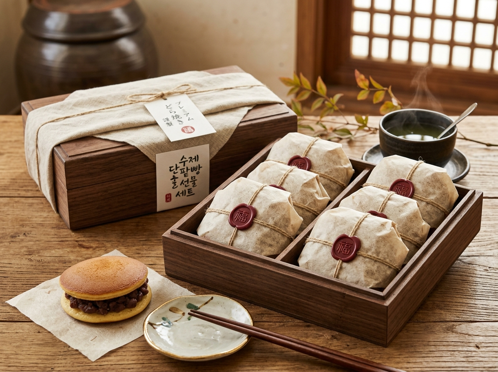

The Process
동으로 만든 가마솥에서 팥을 푹 익힙니다. 그냥 끓이는 게 아니고 계속 저어주어야 해요..🫠
한국에서는 동으로 만든 가마솥을 구할 수 없어서 일본에서 직접 가져왔답니다! 일반 냄비나 솥에서 끓인 것과는 다른 특별한 맛을 느끼실 수 있어요.
촉촉하면서도 부드러운 맛에 은은한 단맛이 느껴지는 도쿄베이커리만의 특별한 빵이 만들어집니다.
절대 뻑뻑하지 않아요. 팥과 어우러져 완벽한 맛을 만듭니다. 다 만들어진 도라야끼는 검수과정 뒤 정성껏 포장됩니다.
